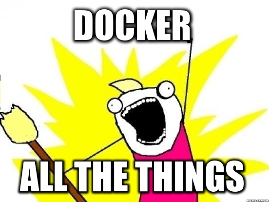

How it works
- JS editor widget
- node.js server API endpoint
- Display output
OSS
- golden-layout
- monaco
- CodeMirror
- node.js / express
- underscore
- jquery
- bootstrap
- lru-cache
- ...
- gcc
- clang
- go
- gdc
- ldc
- rustc
- objdump
- nginx
- ...
Duct tape
- Server: 2,300 LoC
- Client: 3,700 LoC
Deployment
EC2 on AWS

But
- 40GB of compiler binaries
- Hours to build and upload images
Solution
- Compiler binaries on NFS mount
- Scripts to update and deploy locally